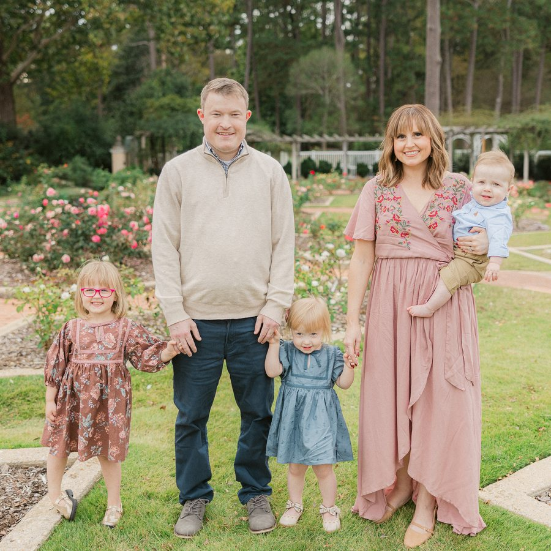

Created by Auburn University graduate Dylan Williams — 10+ years of multimedia production, digital communications, web development, and technology operations through Church of the Highlands, ESPN, College GameDay, and Williams Digital.

I didn't come to communications from marketing — I came to it from engineering and live production. Auburn gave me the technical foundation; a decade in large-audience media taught me how messages actually reach people.
The Office of the Provost sits at the center of everything academic at Auburn. Helping faculty, students, and families find what they need — clearly, quickly, on any device — is exactly the kind of work I've spent my career doing. And the chance to do it for Auburn makes it personal.
Learned to build the systems, not just use them. Web development, software design, and the discipline of shipping things that work.
Multi-campus content distribution across 20+ campuses in Alabama and Georgia. Digital signage on 300+ screens. Training students and volunteer teams to produce at a professional level.
Supported live national broadcasts reaching millions of viewers — one of the biggest stages in sports media, where there are no second takes and communication has to be flawless.
Design and development studio — 60+ websites, dashboards, and communication platforms built for businesses, nonprofits, and organizations across Alabama and beyond.
The fastest way to show what better looks like is to draw it. Here's one example: how faculty find resources today, and how a redesigned experience could work.
One dashboard where the academic community sees everything that matters right now — instead of hunting across pages, emails, and newsletters.
Four concrete ideas, each shown rather than described. Every one is built mobile-first with accessibility as a requirement, not an afterthought.
Lead with what visitors came to do — not an org chart.
Every college, school, and department — one searchable place.
A single location for the things faculty actually search their inbox for.
Most parents and students will arrive on a phone. The experience should be designed there first.
Good communication isn't a website or an email or a post — it's one message, planned once, delivered everywhere its audience lives, then measured.
A single announcement drafted in one place becomes the web post, the email item, and the social copy — consistent, on time, and never out of sync.
Faculty don't need what parents need. Each audience gets its channel mix and its version of the message, from the same source.
Opens, clicks, page traffic, and search terms feed back into what we say next — communications as an improving system, not a broadcast.
Today, each of these layers often communicates on its own — a page updated here, an email sent there, a screen nobody refreshed. Connecting them means a deadline entered once appears on the website, the lobby screens, the faculty digest, and the unit newsletters — automatically, consistently, and measurably. That's the workflow and stakeholder coordination this role exists to run.
Communications at scale isn't theoretical for me — it's been my day job for over a decade.
Organization names described rather than shown — no third-party logos or marks are used on this concept page.
Communication doesn't stop at the website. The physical spaces of the Provost's offices — lobbies, conference rooms, classrooms — can communicate too. Here's how, with the exact technology I've run for a decade.
Every lobby TV and hallway display becomes part of the communications plan — the same message pipeline that feeds the website and email feeds the screens.
No meeting should start ten minutes late because of an input button. A well-designed room control experience means anyone — not just AV staff — can walk in and present.
For front desks, event staff, and communications coordinators, a small programmable button panel removes dozens of repetitive steps a day — and makes complex operations, like commencement day, one-touch reliable.
Auburn's academic communications are strong — these are places where I believe the right person could make them even better.
Make the most-needed forms, policies, and deadlines findable in seconds — from any device, without insider knowledge of the site structure.
One definitive, mobile-friendly hub for graduates and families: schedules, parking, tickets, livestreams — updated in real time.
A consistent pipeline from "event planned" to web, calendar, email, and social — so nothing great happens quietly.
Clear ownership, templates, and publishing standards across academic units — better consistency with less effort for each office.
Students and parents live on their phones. Every new page and tool should be designed for that reality first.
Short, well-produced video for announcements and initiatives — the skill set I bring from a decade in broadcast.
Ideas are easy — execution is the job. Here's how I'd approach the first three months: listen first, pilot fast, and measure everything.
One working mock dashboard combining website analytics, digital signage management, faculty communications, event management, commencement operations, classroom technology status, and communication requests. Sample data, real interface — a demonstration of how I think, not just what I can build.
Open the Future State Vision →Rather than another paragraph, I'd rather you hear it from me:
Thank you for your consideration — and for taking the time to look at what I'd love to help build.